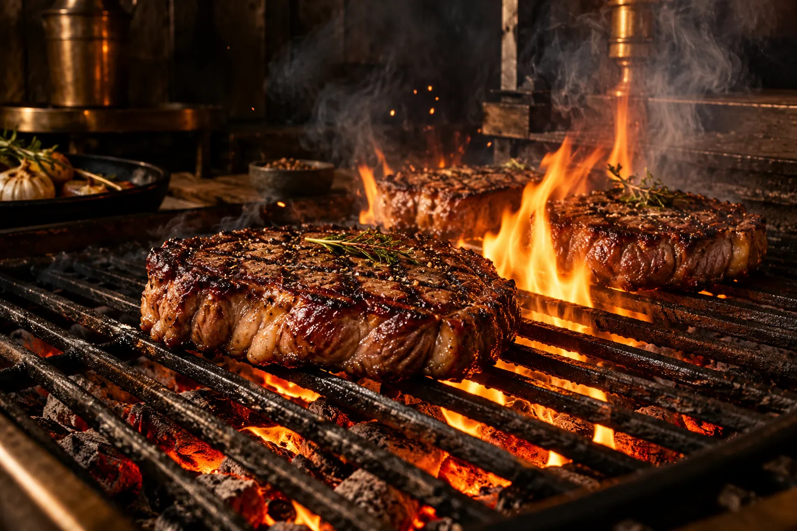
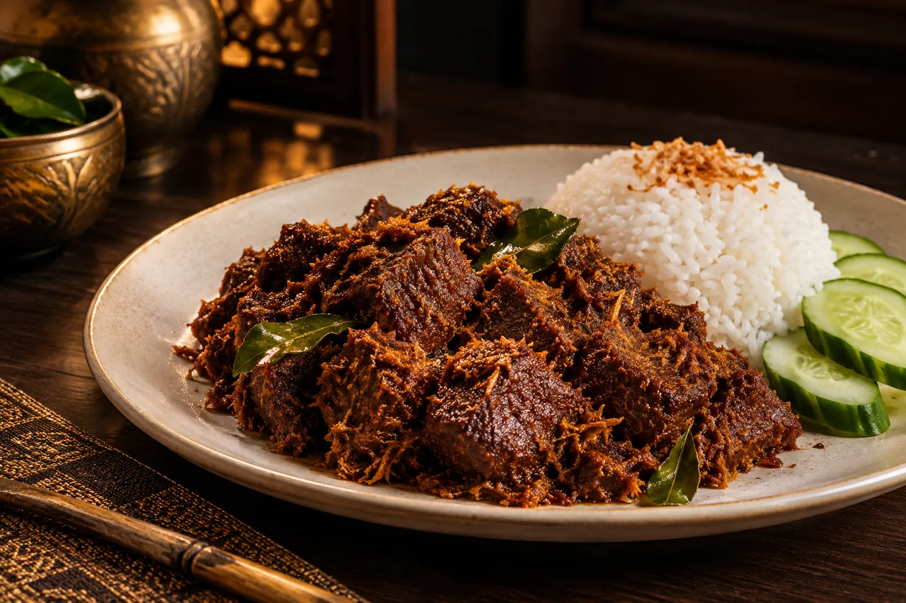
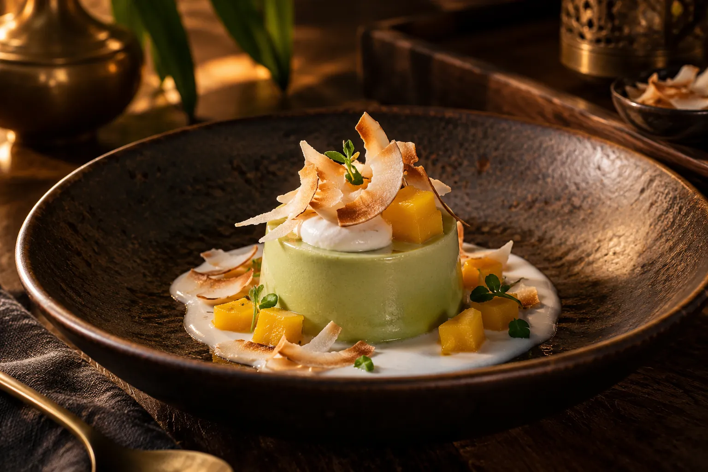
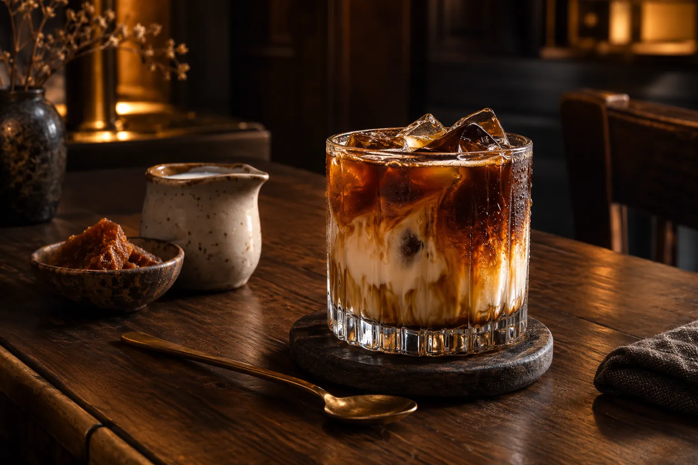
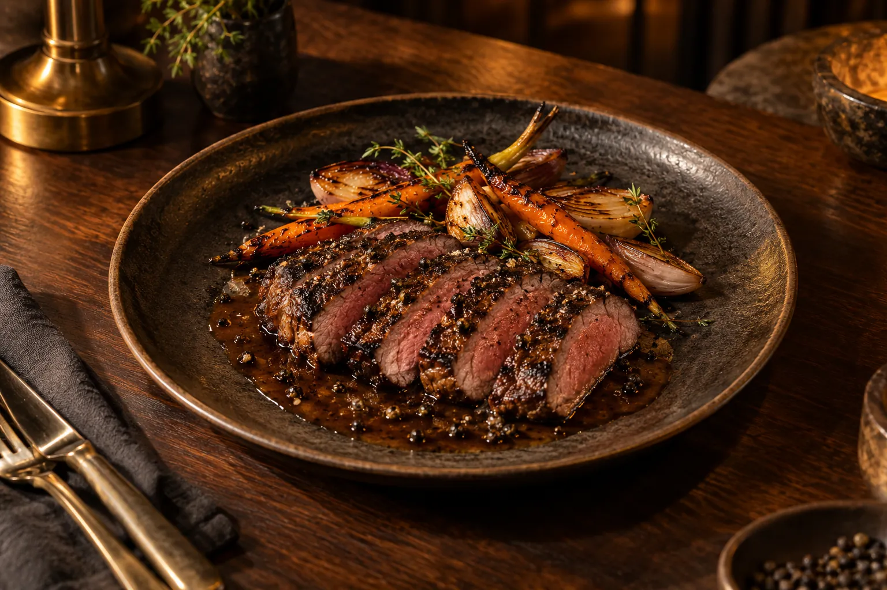
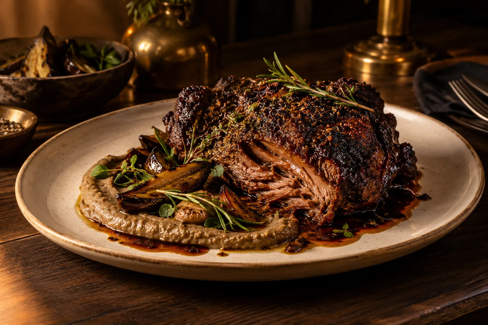
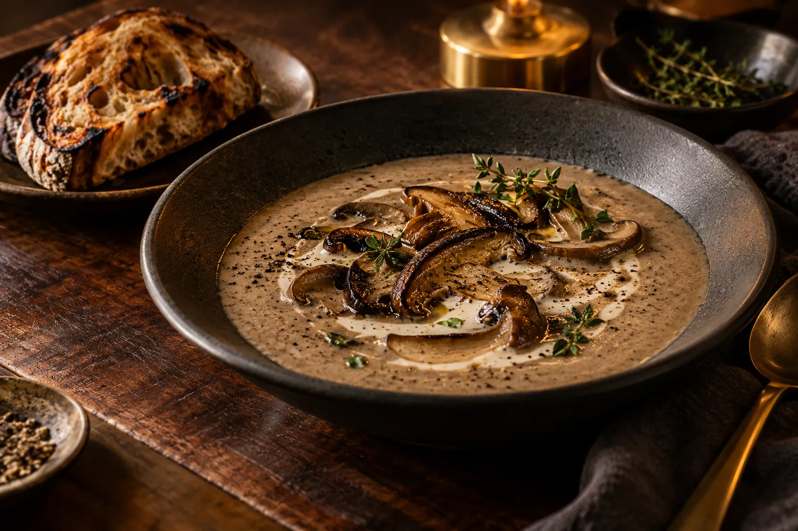
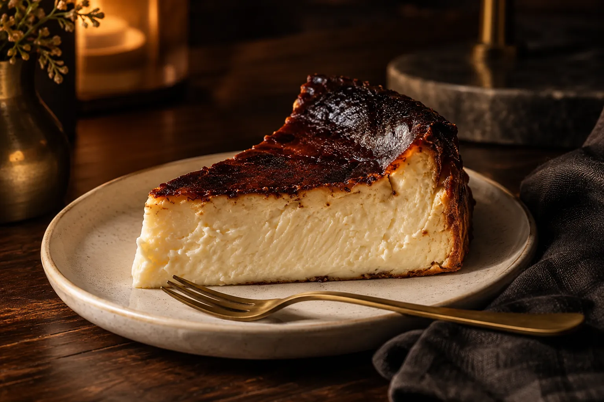
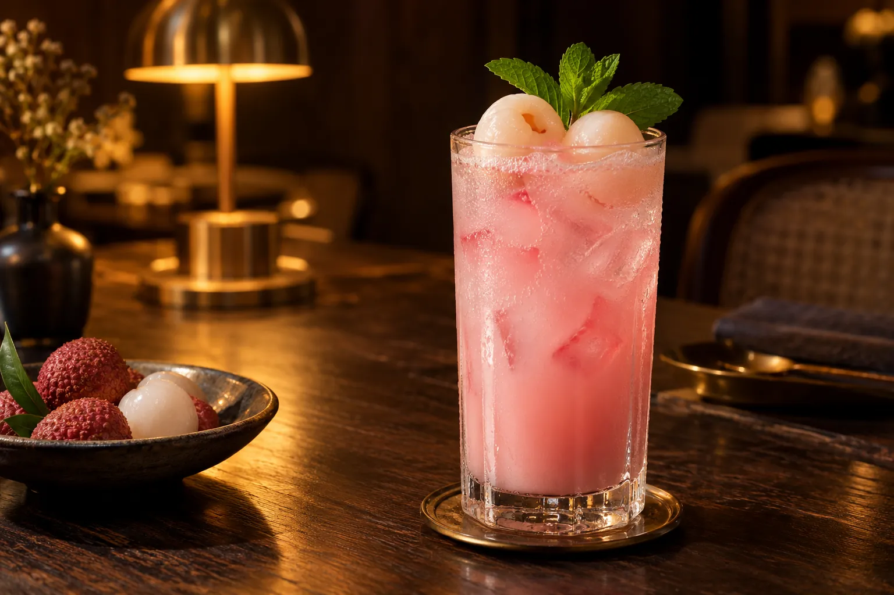

Look.
Linger.
Imagine the rest.
The visual journal. All 17 images are AI-generated concepts of food, spaces and small details.
Explore the images ↓

Look closer. Select an image to open it.

The art of the char
A ribeye imagined for a slow, memorable evening.

An inviting glow
Dark timber, warm brass and tables designed for gathering.

A familiar warmth
Percik-inspired spices and charcoal-kissed chicken.

The flavour foundations
Herbs, chillies and ingredients that bring local cooking to life.

Rooted in memory
A much-loved local classic, presented with intention.

After the lights come on
An imagined evening in the MakanSedap dining room.

A flash of the grill
Grilled prawns with sambal butter, made to share.

The first spark
A little fire changes everything.

A sweet conclusion
Palm sugar, caramel warmth and a moment to linger.

The comfort of home
An interpretation of deeply familiar Malaysian flavours.

A little sweetness
An imagined pandan-inspired dessert moment.

One last conversation
Coffee and gula melaka, long after the plates are cleared.

Pepper & precision
A sirloin, peppercorn sauce and the art of balance.

Low, slow, then fire
Lamb shoulder with smoky aubergine.

A warm beginning
Roasted mushrooms, herbs and a quiet moment.

Beautifully imperfect
A deeply toasted top, a soft creamy centre.

A brighter finish
Rose, lychee and a little sparkle.
An art-directed fiction. These original AI-generated images do not depict real premises, staff or meals served to customers.
This table is imagined.
The design behind it is real.
A fictional table.A real craft.


A restaurant experience, made to show what a website can be. Meet the studio, or enquire about a website for your own business.